Legend: Booked locked in Open not booked yet, still changeable. Every line carries one. Summary in Booked & Open.
The Paris week is unchanged. Then five extra days: a night facing Mont-Saint-Michel (TGV to Rennes and a short drive), back to Paris for one night, the Eurostar on the birthday morning, and three nights in London with the birthday dinner on Mon Dec 7. Same rhythm: slow mornings, one light anchor a day, one proper dinner.
Weather: Mont-Saint-Michel and London in December are cool, grey and damp, highs around 45–48 °F, windy on the bay; sunset ~5 PM at the Mont and ~3:50 PM in London. Pack layers, a waterproof jacket and good shoes.
Risks: check SNCF strike notices about 48 hours before the Dec 5 and Dec 6 trains (and Eurostar for Dec 7). December daylight ends ~5 PM, so plan the drives in daylight.
Booked Flights (United Polaris via Chicago): Out Sat Nov 28: UA5867 Traverse City 2:18 PM → O'Hare 2:55 PM, then UA987 O'Hare 6:45 PM → Paris CDG 9:55 AM Nov 29. Home Thu Dec 10 (open-jaw from London Heathrow T2): UA928 1:35 PM → O'Hare 4:55 PM (seats 4D/5F), then UA2304 O'Hare 7:45 PM → Traverse City 9:59 PM (First, 2E/2F).
Sat Nov 28 · Travel day
Anchor: Get to Paris rested.
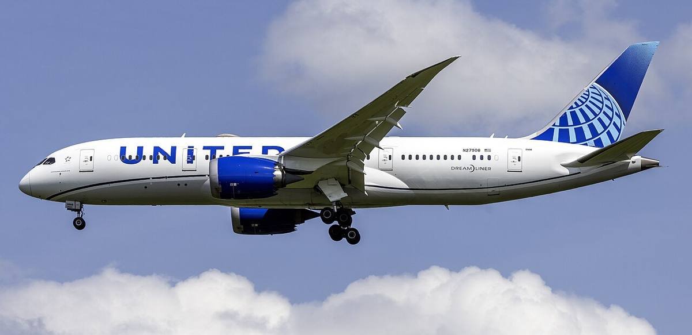
| Morning Open | Pack, and a relaxed early afternoon departure from home. |
|---|---|
| Afternoon Booked | UA5867 2:18 PM → O'Hare 2:55 PM (seats 2C/2D), short hop from Traverse City (TVC) to Chicago O'Hare on United. Time in the United Polaris lounge: sit-down dinner, shower suite, quiet room. |
| Evening Booked | Overnight United Polaris flight Chicago → Paris CDG. Dinner was in the lounge, so sleep early. UA987 O'Hare 6:45 PM → Paris CDG 9:55 AM Sun Nov 29 (seats 3D/3F). |
Sun Nov 29 · Arrive and settle
Anchor: None. Land, rest, tub.
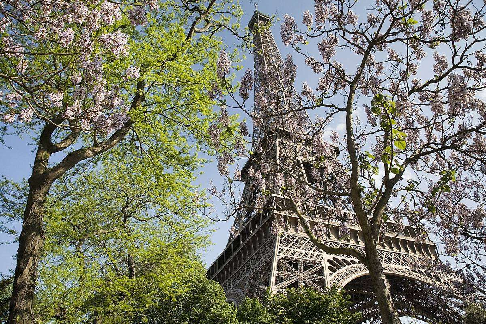
| Morning Open | Land at CDG Terminal 1 mid-morning. Car to the hotel, to book by Nov 20 (hotel car or Welcome Pickups). Drop bags at Hôtel Le Cinq Codet around noon. |
|---|---|
| Afternoon OpenLe Cinq Codet booked; activities open | Latte at Noir – Rue de Grenelle, pastry from La Parisienne. Check in at 3 PM, nap and the tub. Optional wander down Rue Cler. |
| Evening Open | Dusk walk to the Champ de Mars (sunset ~4:57 PM; the Tower sparkles on the hour). 7:30 PM dinner at Bistrot des Fables. Jenny: salmon with sorrel or sea bream. Dessert: bourbon-vanilla crème brûlée. |
Mon Nov 30 · Montmartre at sunset + Moulin Rouge
Anchor: One evening outing.
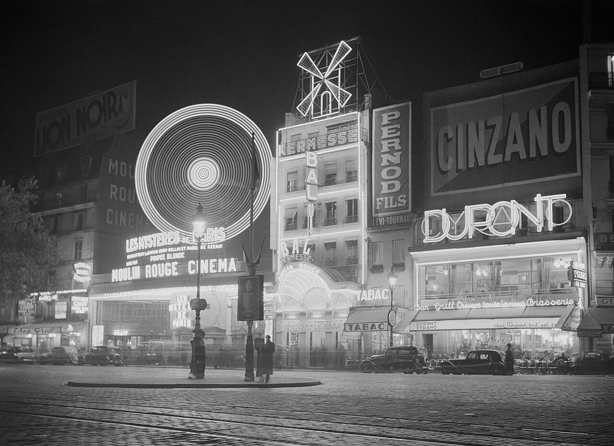
| Morning Open | Late start. Latte at Dialogues Coffee, then tub and rest. |
|---|---|
| Afternoon Open | 1 PM lunch at Les Cocottes (Jenny: roast cod). ~3:15 taxi to Montmartre; dress smart for tonight. Ride the funicular up to Sacré-Cœur. |
| Evening Open | Sunset from the basilica steps (~4:56 PM), stroll Place du Tertre. Moulin Rouge Dinner & Show: doors 6:45, dinner with the orchestra at 7 PM, Féerie show at 9 PM. Jenny: the Belle Époque menu (smoked salmon, then pike-perch) — flag the shellfish allergy when booking. Smart dress, no trainers. Taxi home ~11 PM. Book only via reservations.moulinrouge.fr. |
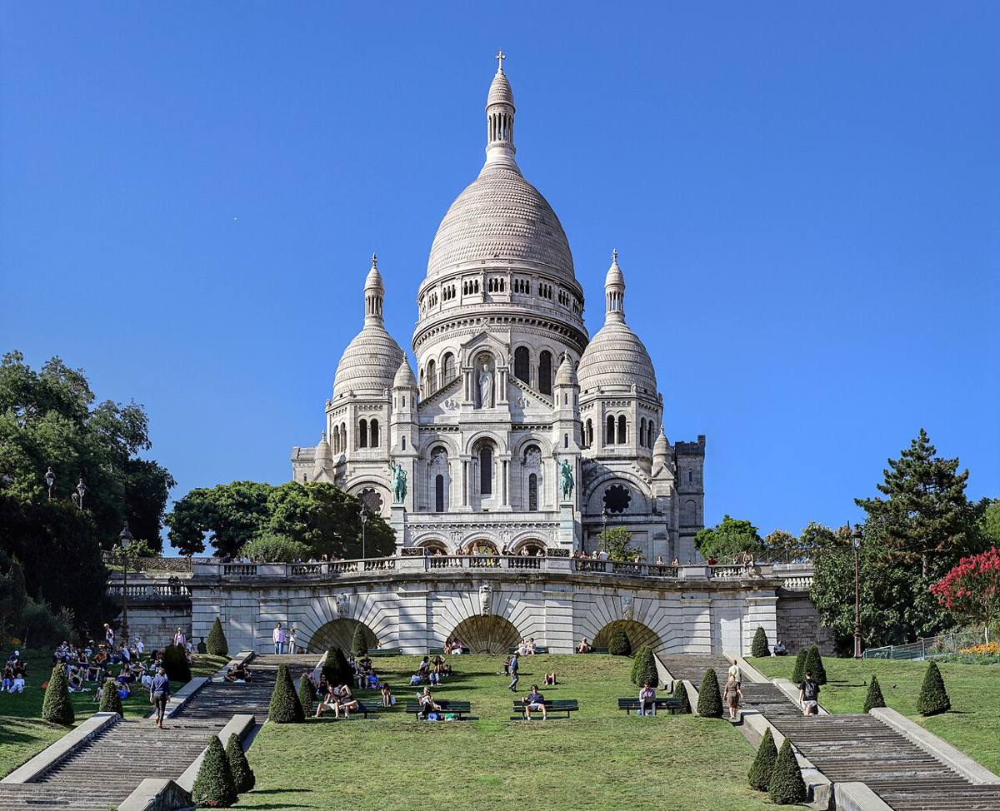
Tue Dec 1 · Catacombs + lunch at Baguette
Anchor: The Catacombs, then a long lunch.
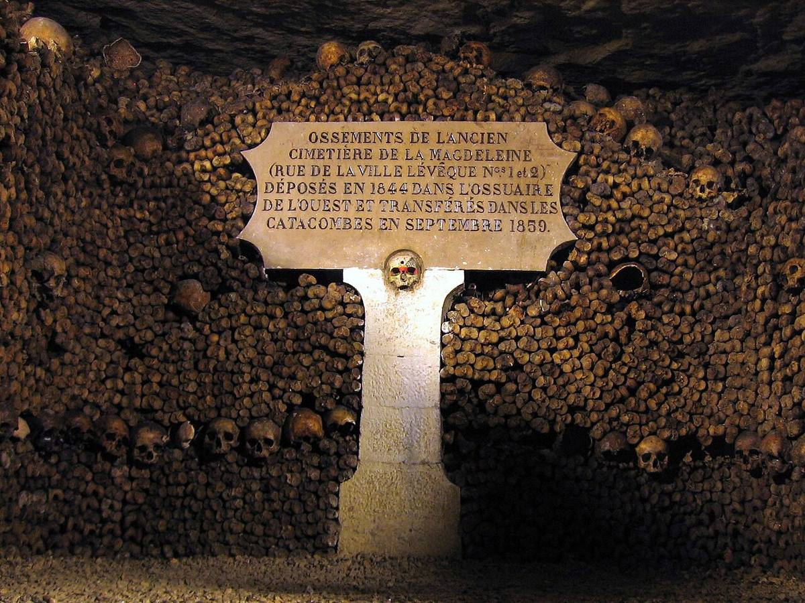
| Morning Open | ~9:15 filter coffee at Coutume. Metro line 6 to Denfert-Rochereau. 10:30 timed entry at the Catacombes de Paris (~1 hr, 131 steps down / 112 up, ~14 °C inside — bring a layer, no big bags). |
|---|---|
| Afternoon Open | Taxi to Montorgueil. 12:15 lunch at Baguette, French-Asian small plates. Jenny: salmon tartare with ginger, truffle risotto, smoked aubergine — skip the shrimp spring roll. Dessert: black-sesame crème brûlée. Keep it light. Taxi back, rest and tub. |
| Evening Open | 7:30 PM dinner at Café Caillou. Jenny: fresh salmon, mushroom risotto or aubergine gratin. Clark: a Chinon by the bottle. |
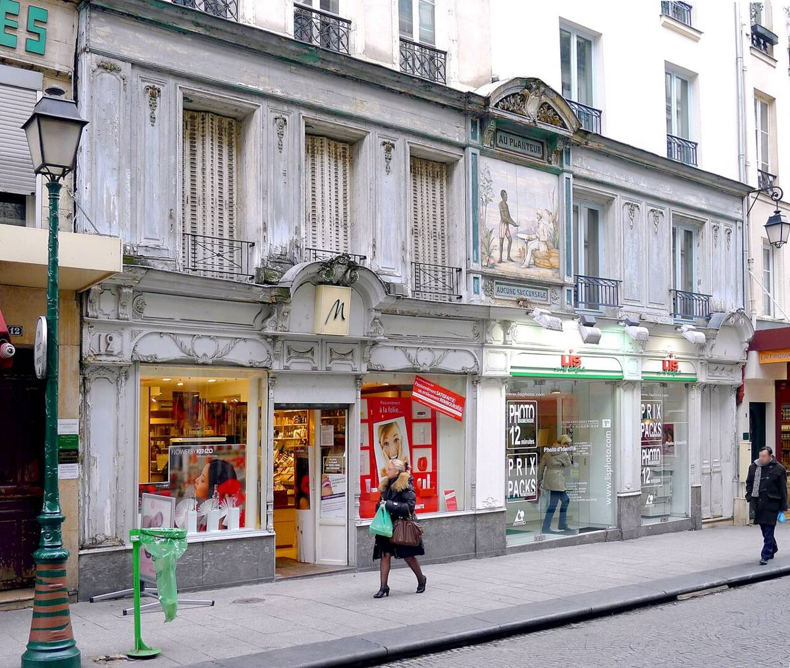
Wed Dec 2 · Versailles + Gordon Ramsay au Trianon
Anchor: The palace, then the starred dinner. Long day; taxi home.
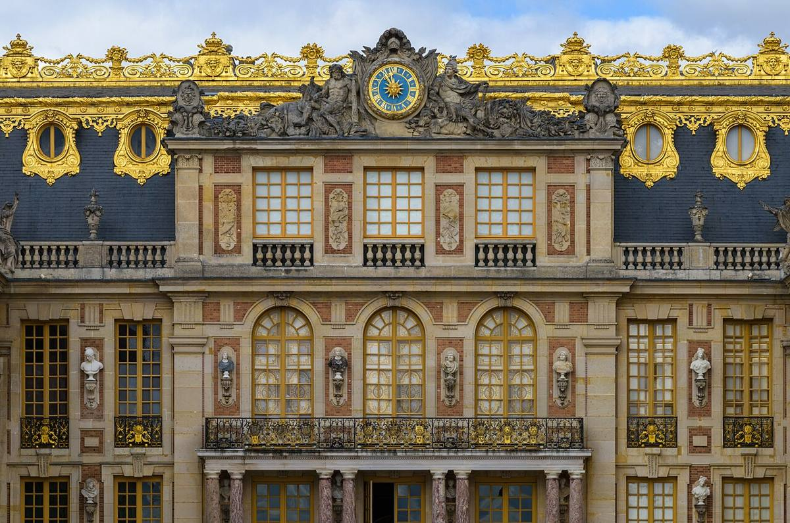
| Morning Open | ~9:15 pastry; dress smart casual for dinner. ~9:45 RER C from Champ de Mars–Tour Eiffel to Versailles Château Rive Gauche (~35–40 min). 11:00 timed entry, Palace of Versailles (Passport ticket). |
|---|---|
| Afternoon Open | ~1 PM lunch at Ore – Ducasse in the palace grounds. Jenny: truite aux amandes; skip the raw scallops. ~2:30 gardens, then the Trianons and Marie-Antoinette's Hamlet (last entry 4:45). |
| Evening Open | ~5 PM drinks at the Waldorf Astoria Trianon Palace bar: an Old Fashioned for Clark, Crémant for Jenny. 7:30 PM Gordon Ramsay au Trianon ★ — request a pescatarian, shellfish-free menu at booking (signatures use lobster and cockles). ~10:15 pre-booked taxi back to the hotel: the RER C closes evenings from 11 PM for works. |
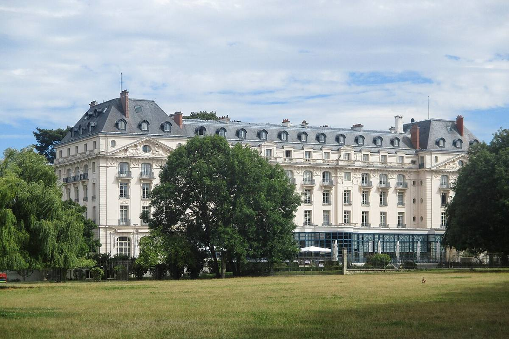
Thu Dec 3 · The big-view day
Anchor: The 5 PM Seine cruise.
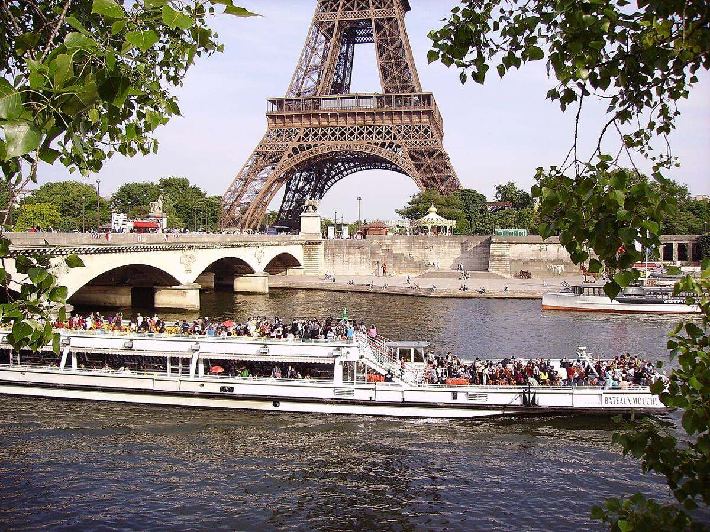
| Morning Open | ~10:00 slow coffee at Dialogues. Optional walk over Pont d'Iéna to the Trocadéro esplanade for the classic Tower view. |
|---|---|
| Afternoon Open | 1 PM light lunch at Les Cocottes. Tub and rest. Leave 4:35, dressed warm. |
| Evening Open | 5 PM cruise with Bateaux Parisiens (Port de la Bourdonnais), back ~6 PM as the Tower sparkles. Old Fashioned at Minuit Express. ~7:45 dinner at Le Bosquet (Jenny: grilled cod, sauce vierge — oysters on the menu, flag the allergy). |
Fri Dec 4 · Super-relaxed last Paris-week day
Anchor: None. Early night.
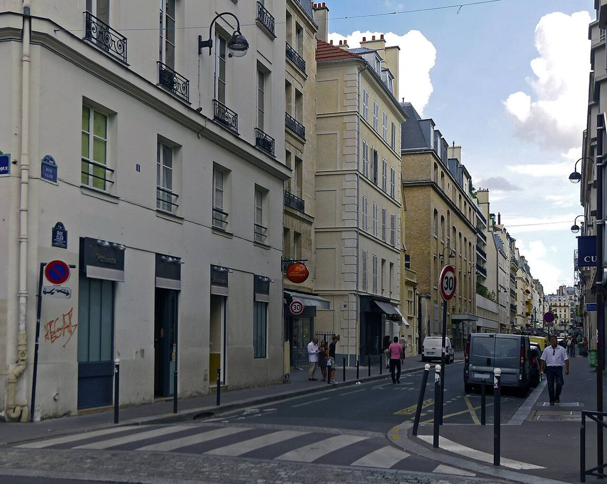
| Morning Open | Late breakfast from La Parisienne, latte at Noir, last stroll down Rue Cler. |
|---|---|
| Afternoon Open | Light lunch at Les Cocottes. Hotel spa and a long soak. Pack for the onward trip: tomorrow is the 12:57 PM TGV to Rennes, no airport car needed. |
| Evening Open | 7 PM farewell dinner at La Fontaine de Mars. Jenny: salmon in salt crust or roasted sea bass. Dessert: crème brûlée à la vanille. Lights out ~10. |
Sat Dec 5 · Paris → Mont-Saint-Michel
Anchor: TGV to Rennes, a short drive, and sunset over the Mount.
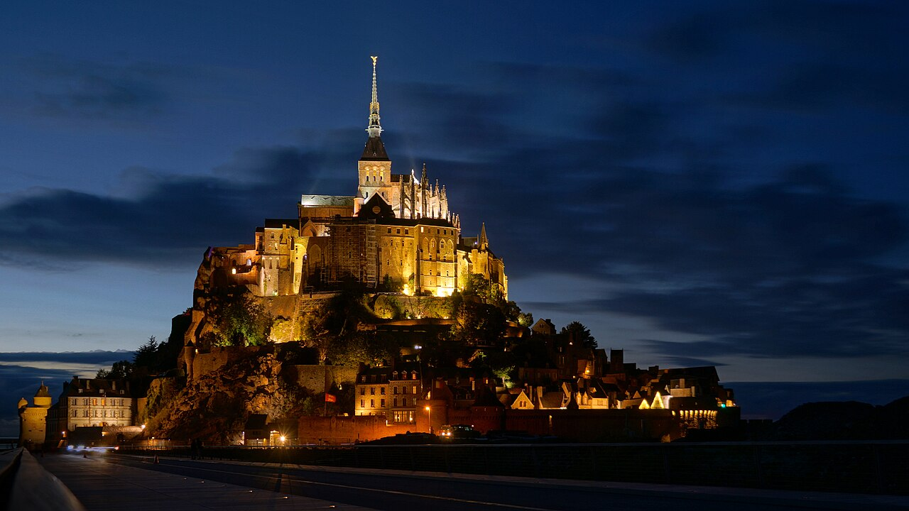
| Morning BookedLe Cinq Codet + TGV booked; taxi open | Slow breakfast and check out of Le Cinq Codet at 11:00. Taxi to Paris-Montparnasse. TGV INOUI 12219 Paris-Montparnasse 12:57 PM → Rennes 2:25 PM, 1st class, seats together (booked; e-tickets are in the SNCF Connect app, "Tickets" section). |
|---|---|
| Afternoon BookedRelais + car booked | Lunch at Rennes station, then pick up the car at Sixt Rennes Gare at 2:30 PM (booked: VW T-Roc automatic or similar, flexible rate, pay at pickup; desk in the station hall, level 0, in front of McDonald's; Saturday hours 9–1 and 2–5). Bring license, passport and a credit card in Clark's name. Easy, toll-free drive (~1 hr 10, ~70 km on the A84 then N175) to the Mont. Check-in from 4 PM at Le Relais Saint-Michel (booked: Signature room with private terrace and view of the Mount, breakfast included, flexible rate with free cancellation before Nov 25). Before arriving, call the hotel for the access code to the hotel access road and parking: it is the last hotel before the bridge to the Mount, and reception is open 24 hours. Parking is paid at the parking machine on departure. |
| Evening Open | Sunset (~5 PM) over the bay from the hotel, then the free shuttle across for a quiet walk up the lit, empty village. Dinner at the hotel restaurant facing the Mount, or in the village. Jenny: local fish of the day; this is shellfish country, so flag the allergy every time. |
Sun Dec 6 · The abbey, then back to Paris
Anchor: Sleep in, the abbey late morning, and an evening train to Paris.
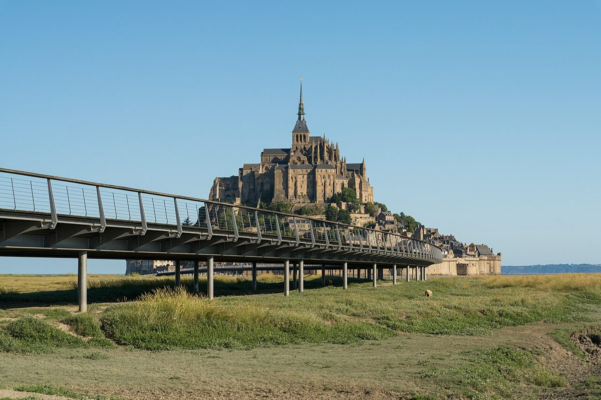
| Morning Open | Breakfast with the view, then check out by 10 AM (bags in the car; pay parking at the machine when you leave). Shuttle across to the Mont-Saint-Michel Abbey ~10:00–12:30 (dress warm), then lunch in the village or back at the hotel. |
|---|---|
| Afternoon Booked | Drive back to Rennes at ~2:30 PM (~1 hr 10). Return the car (booked for 3:30 PM, same fuel level) at the Effia Gare Nord car park, 6 Boulevard Solférino: Sixt bays on level 7, then keys to the Sixt desk in the station (Sunday hours 10–1 and 2–5) or the key box after hours. December daylight ends ~5 PM, so aim to be off the road by then. |
| Evening BookedTGV + Mademoiselle booked; taxi open | TGV INOUI 8074 Rennes 4:31 PM → Paris-Montparnasse 6:49 PM, 1st class, seats together (booked; e-tickets in the SNCF Connect app). Taxi (~25–30 min) to Hôtel Mademoiselle for the night (booked: Allure Deluxe king, breakfast included, ~€170 estimate paid at the hotel), a 4-star boutique hotel ~100 m (3–5 min walk) from Gare du Nord, so the 12:08 Eurostar is a short walk. Arrival ~7 PM noted; a quiet courtyard-side room requested. Free spa access until 10:30 AM. Flexible: free cancellation until 11:59 PM Paris time on Fri Dec 4. Easy dinner nearby and an early night. |
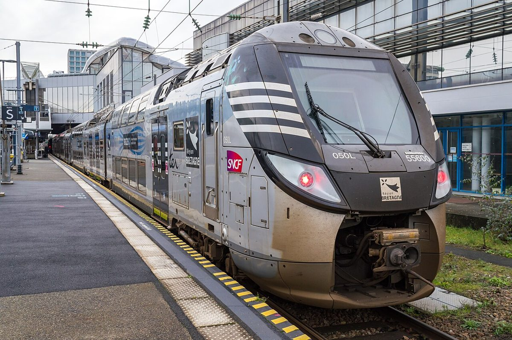
Mon Dec 7 · Birthday · Paris → London
Anchor: A relaxed morning, the Eurostar, then the birthday dinner.
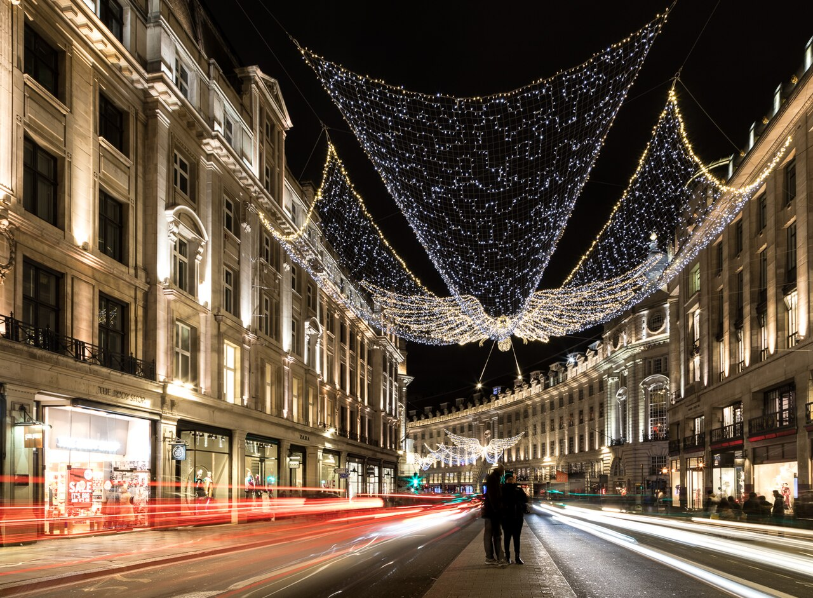
| Morning Booked | Relaxed breakfast at Hôtel Mademoiselle. ~10:50 walk with the bags to Paris Gare du Nord (3–5 min; no taxi needed), arriving ~1 hour early for security and passport control. Eurostar 9027 Paris Gare du Nord 12:08 PM → London St Pancras 1:30 PM London time, Eurostar Plus, seats together (booked; tickets in the Eurostar app once both passports are entered). |
|---|---|
| Afternoon OpenW London booked; taxi open | Taxi from St Pancras to W London at 10 Wardour Street, Leicester Square (~15–20 min). Booked: Standard King; birthday noted and an upgrade requested. Check-in is 3 PM, so drop bags and have a late lunch in Soho or Chinatown (a 2–5 min walk), then rest. Leicester Square and Piccadilly Circus Tube stations are each ~3 min away. Time to dress for dinner. |
| Evening Booked | Birthday dinner at Gymkhana, the Michelin-starred Indian at 42 Albemarle Street, Mayfair, 9:15 PM (we asked for an earlier table; it moves if they offer one). ~12–15 min walk from the hotel via Piccadilly Circus, or a 5-min taxi. Smart casual. Jenny's pescatarian diet and shellfish allergy and the birthday are noted for the restaurant. Old Fashioned first at the W Lounge; Champagne or English sparkling for Jenny. |
Tue Dec 8 · Churchill War Rooms + Christmas at Kew
Anchor: A morning museum, then the lights at Kew.
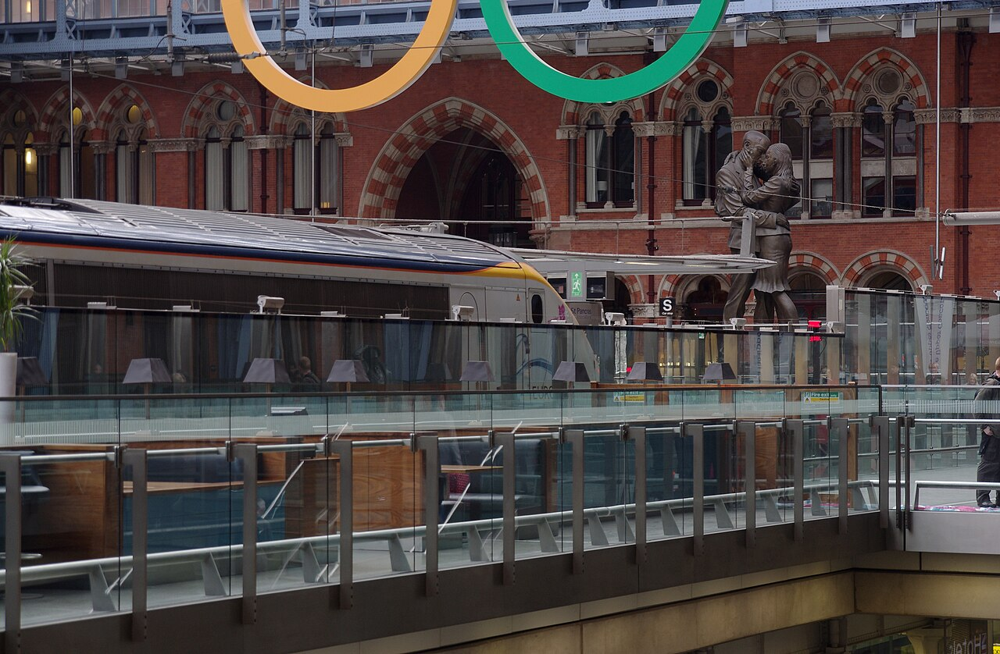
| Morning Open | Slow morning. ~11 AM timed entry to the Churchill War Rooms (~1 hr 30; taxi ~15 min). Alternative: the Tower of London and the Crown Jewels. The Bayeux Tapestry at the British Museum (~15 min walk from the hotel) is sold out; worth checking for returns. |
|---|---|
| Afternoon Open | Lunch near Westminster, then back to the hotel to rest. |
| Evening Open | Taxi (~45 min) to Christmas at Kew for an early-evening timed entry, the illuminated trail through the gardens (~1 hr 30, dress warm). Taxi back and a relaxed late dinner. |
Wed Dec 9 · London at Christmas
Anchor: Tower Bridge and a riverside lunch, then Winter Wonderland at dusk.
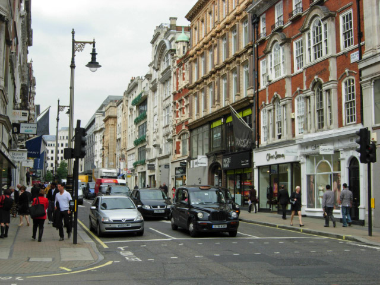
| Morning Open | Late breakfast. ~10:30 AM taxi or Tube (~20 min) to the Tower Bridge Exhibition: the high-level walkways with the glass floor over the Thames, and the Victorian engine rooms (~1 hr 15; tickets not booked yet, buy online in advance). |
|---|---|
| Afternoon Open | ~12:30 PM lunch at Coppa Club Tower Bridge, on the north bank just west of the bridge (Three Quays Walk, next to the Tower of London), with terrace views of Tower Bridge and The Shard. Open from 9 AM (Mon–Thu until 11 PM); lunch bowls and the all-day menu from 11:30 AM. The heated riverside igloos must be booked ahead (not booked yet). Jenny: check the menu for fish and vegetarian dishes and flag the shellfish allergy. Then back to the hotel to rest and pack. |
| Evening Open | Stroll into Hyde Park Winter Wonderland after dark (open Nov 19 – Jan 3). Farewell dinner; early night. |
Thu Dec 10 · Fly home from Heathrow
Anchor: A relaxed last morning, then Polaris home.
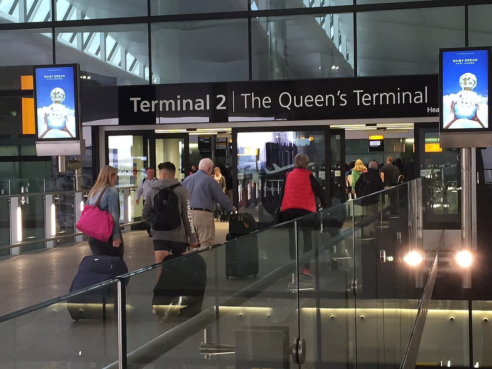
| Morning OpenW London booked; transfer open | Late breakfast and a slow pack. Leave the hotel at ~10:15 AM: 3-min walk to Leicester Square and the Piccadilly line direct to Heathrow Terminals 2 & 3 (~50 min), or a 10-min walk to Tottenham Court Road and the Elizabeth line (~35 min), arriving ~11:15 for the 1:35 PM flight. With bags, a taxi (~1 hr) is the easy alternative. |
|---|---|
| Afternoon Booked | UA928 Heathrow T2 1:35 PM → Chicago O'Hare 4:55 PM, United Polaris (Boeing 767-300). Seats: Clark 4D, Jenny 5F (center seats, one diagonally behind the other). |
| Evening Booked | 2h50 connection at O'Hare: clear passport control and customs, re-check bags and re-screen, then a sit-down dinner in the United Polaris lounge (Terminal 1, near gate C18). UA2304 O'Hare 7:45 PM → Traverse City 9:59 PM, First, seats 2E/2F. |
Booked (locked in)
| Item | What |
|---|---|
| Booked Flights out, Sat Nov 28 | UA5867 Traverse City 2:18 PM → O'Hare 2:55 PM (2C/2D); UA987 O'Hare 6:45 PM → Paris CDG 9:55 AM Nov 29 (3D/3F). |
| Booked Paris hotel, Nov 29 – Dec 5 | Le Cinq Codet, 7th arrondissement. |
| Booked Mont-Saint-Michel hotel, Sat Dec 5 | Le Relais Saint-Michel, Signature room with terrace and Mount view, breakfast included. Flexible: free cancellation before Nov 25. Check-in from 4 PM, check-out by 10 AM. Call ahead for the access-road code. |
| Booked TGV trains, Sat Dec 5 + Sun Dec 6 | TGV INOUI 12219 Paris-Montparnasse 12:57 PM → Rennes 2:25 PM, and TGV INOUI 8074 Rennes 4:31 PM → Montparnasse 6:49 PM. 1st class, seats together, ~€320 for two (estimate). Tickets: QR e-tickets in the SNCF Connect app ("Tickets" section), or PDF. Free change/refund until 7 days before. |
| Booked Eurostar, Mon Dec 7 | Eurostar 9027 Paris Gare du Nord 12:08 PM → London St Pancras 1:30 PM, Eurostar Plus, seats together, ~$500 for two (estimate). Tickets in the Eurostar app after both enter passport details (Advance Passenger Information). Free change up to 1 hour before. |
| Booked Sixt car, Rennes station, Dec 5 – 6 | VW T-Roc automatic or similar, ~€115 estimate, paid at pickup. Pick up Sat 2:30 PM at the station desk; return Sun 3:30 PM to level 7 of the Effia Gare Nord car park (key box after hours). Free cancellation until pickup. |
| Booked Paris hotel, Sun Dec 6 | Hôtel Mademoiselle, Paris 10e, ~100 m from Gare du Nord. Allure Deluxe king, breakfast and spa access (until 10:30 AM) included; pay at the hotel (~€170 estimate). Flexible: free cancellation until 11:59 PM Paris time Dec 4. |
| Booked London hotel, Dec 7 – 10 | W London, 10 Wardour Street, Leicester Square, London W1D 6QF, Standard King (birthday noted, upgrade requested). |
| Booked Birthday dinner, Mon Dec 7 | Gymkhana, 42 Albemarle St, Mayfair, 9:15 PM (asked for earlier). Smart casual. |
| Booked Flights home, Thu Dec 10 | UA928 Heathrow T2 1:35 PM → O'Hare 4:55 PM (4D/5F); UA2304 O'Hare 7:45 PM → Traverse City 9:59 PM (First, 2E/2F). |
Open (not booked yet, still changeable)
| Item | What |
|---|---|
| Open Tower Bridge + Coppa Club, Wed Dec 9 | Tower Bridge Exhibition tickets (late morning), then lunch at Coppa Club Tower Bridge ~12:30 PM; book an igloo ahead if you want one. |
| Open Paris activities and dinners | Moulin Rouge (not booked; decision overdue), Catacombs, Versailles, the Seine cruise and the Paris dinner tables. |
| Open Airport transfers | CDG → hotel Nov 29; hotel → Heathrow Dec 10 (Tube or taxi on the day). |
| Open London sights | Churchill War Rooms or Tower of London, Christmas at Kew (Tue Dec 8), Tower Bridge Exhibition and Winter Wonderland (Wed Dec 9). Bayeux Tapestry at the British Museum is sold out (check for returns). |
Dining notes
Jenny: pescatarian, shellfish allergy
Je suis allergique aux fruits de mer et crustacés. Je mange du poisson mais pas de fruits de mer.
In London: "Pescatarian, with a shellfish allergy — no prawns, crab, lobster, scallops, mussels or oysters, and no shellfish stock."
Menus around the Mont lean on oysters, mussels and scallops; ask for the fish of the day (sole, bar, cabillaud, saumon). Jenny: Crémant or Champagne in France, English sparkling in London. Clark: bold reds, an Old Fashioned at the hotel bar, crème brûlée when it appears.
Photo credits
- eiffel: Vedettes de Paris from the Eiffel Tower, April 2011.jpg — Cristian Bortes from Cluj-Napoca, Romania, CC BY 2.0
- sacre: Paris - Basilique du Sacré-Cœur de Montmartre - 2025-09-30 23-31-57 001.jpg — Giò Terra (Terragio67), CC BY-SA 4.0
- moulin: De Moulin Rouge in Parijs bij avond, Bestanddeelnr 254-5695.jpg — Willem van de Poll, CC0
- catacombs: Catacombes de Paris edit.jpg — Wikimedia Commons, CC BY-SA 3.0
- versailles: Main Façade, Palace of Versailles, Cour Royale.jpg — Julian Lupyan, Public domain
- trianon: Trianon Palace vu du parc.jpg — Thomon, CC BY-SA 4.0
- seine: Bateau Mouche on river Seine near the Pont d'Iéna and Eiffel Tower in Paris, France.jpg — Jean-Pierre, CC BY-SA 2.0
- ruecler: P1200290 Paris VII rue Cler rwk.jpg — Mbzt, CC BY-SA 3.0
- champ: Paris - The Eiffel Tower in spring - 2307.jpg — Jorge Royan, CC BY-SA 3.0
- montorgueil: P1010070 Paris Ier Rue Montorgueil n°12 reductwk.JPG — Mbzt, CC BY-SA 3.0
- plane: United Boeing 787-8 N27908 IAD VA2.jpg — Acroterion, CC BY-SA 4.0
- msm: Mont Saint-Michel at night - BeBo86.jpg — BeBo86, CC BY-SA 4.0
- stpancras: St Pancras railway station MMB C0 373213.jpg — mattbuck (category), CC BY-SA 3.0
- london: Regent Street Christmas Lights 2017 - geograph.org.uk - 5642213.jpg — Christine Matthews, CC BY-SA 2.0
- mayfair: New Bond Street, Mayfair - geograph.org.uk - 966302.jpg — Stephen McKay, CC BY-SA 2.0
- heathrow: Departure hall entrance, London Heathrow Terminal 2, UK - 20150621.jpg — Smuconlaw, CC BY-SA 4.0
- rennes: 2025-01-02 Regio 2N, Rennes (2).jpg — RAIL P (RAIL.PHOTOGRAPHY), CC0
- msmcause: Bridge to Mont St Michel (3).jpg — Lynx1211, CC BY-SA 4.0
- Restaurant images are screenshots of each venue's own website.


.jpg){kind=link}
.jpg){kind=link}